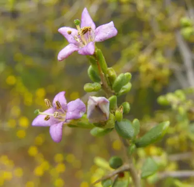

pranet · 出典付きの植物図鑑
Baja desert-thorn
Lycium brevipes Benth. · Solanaceae

Lycium brevipes is a species of flowering plant in the nightshade family known by the common name Baja desert-thorn. It is native to northwestern Mexico and it occurs in California as far as the Sonoran Desert as well as some of the Channel Islands. It grows in the scrub of desert and coastline. It is also used as a southwestern landscaping plant. This is a bushy, spreading shrub approaching a maximum height of 4 metres (13 ft) with many long, thorny, tangled branches. The branches are lined with small, fleshy green leaves up to 1.5 centimetres (0.59 in) long and coated with glandular hairs. The inflorescence is a small cluster of tubular flowers roughly 1–2 centimetres (0.39–0.79 in) long including the calyx of sepals at the base. The lavender to nearly white corolla is funnel-shaped and has 2 to 6 lobes at the mouth. The five stamens and one style protrude from the flower. The fruit is a bright red spherical berry about a centimeter wide containing many seeds. The berries attract birds.
出典: Wikipedia (en): Lycium brevipes · CC BY-SA 4.0
異名: Lycium hassei (Greene) A.Terracc., Lycium hassei Greene, Lycium richii A.Gray
同定や利用は自己責任でお願いします。この図鑑だけを根拠に野生の植物を食べないでください。
出典
- 学名: World Flora Online Plant List 2026-06 · CC0 1.0
- 名前: Wikipedia の記事名と Wikidata · CC0 1.0（Wikidata）。記事名は事実
- 説明: Wikipedia (en): Lycium brevipes · CC BY-SA 4.0
- 食用・毒性: World Checklist of Useful Plant Species (Diazgranados et al. 2020, RBG Kew) · CC BY 4.0
- 分布: World Checklist of Vascular Plants (WCVP), RBG Kew, version 2026-06-04 · CC BY 3.0
このページは pranet のデータから自動生成しています。コードは MIT、データは項目ごとのライセンス（説明）。